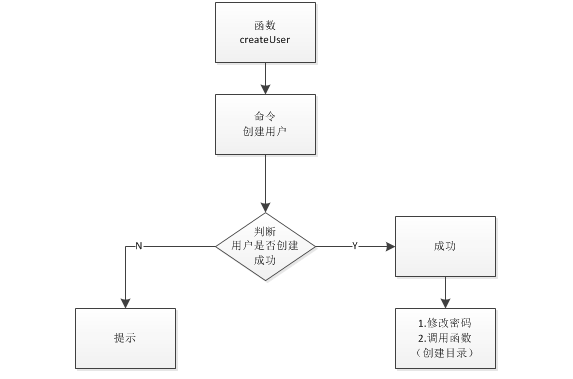

Shell自动化部署
目标
1. 了解使用shell脚本部署oracle数据库
1.1 自动化部署oracle
1.1 为什么要自动化部署？
1. linux系统基本都命令操作[用户组、权限组、等]
2. 复用性[多台测试环境部署]
1.2 部署环境准备
1. 操作系统 linux-Red
2. 硬盘可用空间1.5G以上(oracle数据库1.2G)
3. 电脑物理内存1G以上
1.3 安装前配置
1. 确定当前登录的是超级管理员 root 用户；
2. 创建组函数(创建管理组、创建安装组)
3. 创建用户函数(创建用户、修改密码)
4. 创建目录函数(创建目录、修改目录所属组及群组、修改目录安装权限、调用修改环境变量函数)
5. 创建环境变量函数
6. 创建安装函数
1). 如何确定登陆用户为超级管理员
1. $USER 获取当前用户
示例：
# 判断当前用户是否为root
if [ "${USER}" == "root" ]
then
echo "当前用户是root"
# 调用创建组函数
createGrp
else
echo "当前用户不是root,而是$USER"
fi
2) 创建组函数 (createGrp)
难点：
1. 获取创建的组 -->grep dba /etc/group|cut -d ":" -f 1
(cut:获取字符串；-d ：自定义分隔符；-f：获取分割后第几个值)
示例：
# 创建组函数
createGrp(){
# 执行创建组命令
groupadd dba
# 获取创建的组
str=`grep dba /etc/group|cut -d ":" -f 1`
# 判断是否创建成功
if [ "${str}" == "dba" ]
then
# 提示创建成功
echo "用户组创建成功！"
# 创建安装组
groupadd oinstall
# 获取创建的 oinstall
oinstall=`grep oinstall /etc/group|cut -d ":" -f 1`
# 判断是否创建成功
if [ "${oinstall}" == "oinstall" ]
then
echo "oinstall组创建成功！"
# 调用创建用户函数
createUser
else
echo "oinstall组创建失败！"
fi
else
echo "管理组创建失败！"
fi
}
3) 创建用户函数(createUser)

难点：
1. 创建用户 --> useradd tester -g oinstall -G dba
(-g：用户所属组【必须指定】；-G：附加组-同时属于哪个组)
2. 获取创建用户 --> grep tester /etc/passwd|cut -d ":" -f 1
(用户创建成功在/etc/passwd目录内)
示例：
# 创建用户函数
createUser(){
# 执行创建用户指令
useradd tester -g oinstall -G dba
# 获取创建用户
tester=`grep tester /etc/passwd|cut -d ":" -f 1`
# 判断是否创建成功
if [ "${tester}" == "tester" ]
then
echo "用户创建成功！"
# 修改tester用户密码
passwd tester
# 调用创建目录函数
createDir
else
echo "用户创建失败！"
fi
}
4) 创建目录函数
难点：
1. 创建目录 --> mkdir -p /oracle/product/10.2.0/db_1
2. 修改目录所属组及群组 --> chown -R tester.oinstall /oracle
(chown：修改文件拥有者；-R : 对目录下的所有文件与子目录进行相同的拥有者变更)
3. 修改目录安装权限 --> chmod 755 -R /oracle
(
1. chmod：修改文件权限-可读[r]:4;可写[w]:2;执行[x]:1;
2. Linux档案存取权限分为三级：档案拥有者(User)、群组(Group)、其他(Other)
3. 775：7(User-rwx)5(Group-rwx)5(Other-r-x)
)
示例：
# 创建目录函数
createDir(){
# 把目录定义成字符串方便判断是否陈宫
dir="/oracle/product/10.2.0/db_1"
mkdir -p "${dir}"
# 判断目录是否创建成功
if [ -d "${dir}" ]
then
echo "目录创建成功！"
# 修改oracle目录所属组
chown -R tester.oinstall /oracle
# 修改 oracle 安装目录操作权限
chmod 755 -R /oracle
# 调用修改环境变量函数
editPath
else
echo "目录创建失败！"
fi
}
5) 创建环境变量函数
难点：
1). 向 .bash_profile配置文件内插入内容 --> sed -i "行号[a命令]内容" 文件
(sed：编辑器；-i：插入命令；a：追加当前行；)
2). 重新加载配置文件 --> source ./.bash_profile
3). 判断是否配置成功 --> if [ "$ORACLE_BASE" == "/oracle" ]
示例：
# 创建调用修改环境变量函数
editPath(){
# 进入/home/tester根目录
cd /home/tester
# 向文件中插入内容
sed -i "10aORACLE_BASE=/oracle" .bash_profile
sed -i '11aORACLE_HOME=$ORACLE_BASE/product/10.2.0/db_1'
sed -i "12aORACLE_SID=orcl"
sed -i '13aPATH=$PATH:$HOME/bin:$ORACLE_HOME/bin'
sed -i '14aLD_LIBRARY_PATH=$ORACLE_HOME/lib:/usr/lib'
sed -i "15aexport ORACLE_BASE"
sed -i "16aexport ORACLE_HOME"
sed -i "17aexport ORACLE_SID"
sed -i "18aexport PATH"
sed -i "19aexport LD_LIBRARY_PATH"
# 重新加载文件
source ./.bash_profile
# 判断文件是否配置成功
if [ "$ORACLE_BASE" == "/oracle" ]
then
echo "配置成功！"
else
echo "配置失败！"
fi
6) 创建安装函数
难点：
1. 解压oracle安装包 --> unzip oracle_10201_database_linux32.zip
示例：
#!/bin/bash
instal(){
echo "instal函数正在被执行..."
cd /tmp
myfile="oracle_10201_database_linux32.zip"
if [ -f "$myfile" ]
then
echo "文件存在..."
echo "正在解压文件..."
else
echo "文件不存在..."
filename="/mnt/hgfs/vmwareShare/oracle_10201_database_linux32.zip"
echo "正在复制文件"
cp "$filename" /tmp
fi
unzip oracle_10201_database_linux32.zip
dir="database"
if [ -d "$dir" ]
then
echo "文件已解压,正在执行.."
cd "$dir"
./runInstaller
else
echo "解压失败!"
fi
}
if [ "$USER" == "tester" ]
then
echo "当前用户是tester.."
# 调用instal函数
instal
else
echo "当前用户非tester,而是$USER"
fi